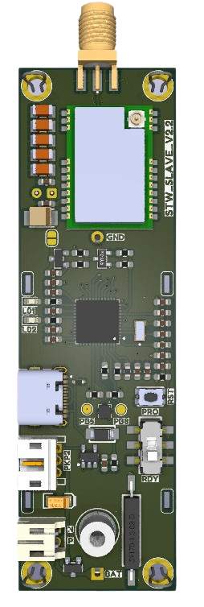

CALUMA es una plataforma de seguridad online, cuyo objetivo es brindar seguridad en lugares remotos y de difícil acceso, construyendo un entorno seguro para agricultores y ganaderos.
Solicitar Información Ver Sitio WebLos robos de cosechas, animales y maquinaria afectan a miles de productores agrícolas y ganaderos cada año, generando pérdidas millonarias que los sistemas de vigilancia tradicionales no logran cubrir.
Una red de sensores inalámbricos (WSN) distribuida por el terreno, interconectada entre sí para cubrir grandes extensiones a bajo costo.

Dispositivo tipo "trampa de línea": un cable se tiende entre árboles o postes en la zona a proteger. Si el intruso lo mueve, el Slave se activa de inmediato y alerta de la intrusión.
Coordina la red de sensores Slave, recibe los eventos y los transmite a la plataforma web, permitiendo cubrir grandes extensiones con múltiples puntos de control.
Los datos se almacenan en la nube y se notifican por mensajería instantánea. Desde tu perfil puedes activar, desactivar y personalizar la protección en tiempo real.
Detecta si la maquinaria agrícola, sistemas de riego o motobombas son movidos de su posición original, evitando pérdidas de cultivo por falta de agua o energía.
Tecnología pensada para operar de forma autónoma en el campo, sin depender de infraestructura eléctrica ni redes fijas.
Un servicio de suscripción simple, sin grandes inversiones iniciales en infraestructura.
Tarifa base del servicio. El kit de sensores tiene un costo aparte de 100€ a 850€ según las prestaciones requeridas.
La marca Caluma se inspira en el camaleón: un reptil que se camufla por completo en su entorno, igual que nuestros dispositivos se integran en el terreno agrícola sin alterar el paisaje ni advertir su presencia ante un posible intruso.
Sus ojos, que se mueven en 360°, representan la vigilancia constante de nuestra red de sensores. Y su lengua, capaz de dispararse en milisegundos con precisión casi perfecta, representa la velocidad con la que Caluma detecta una amenaza y notifica al productor agrícola.